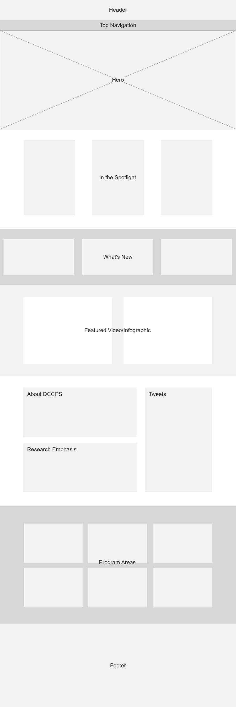
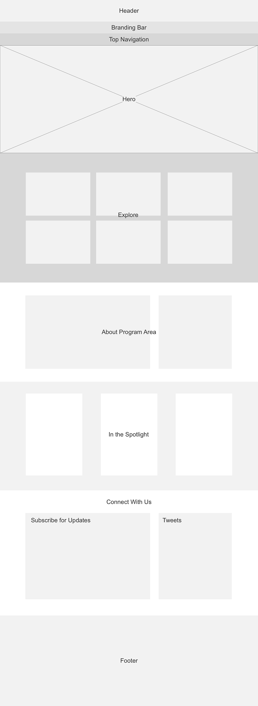
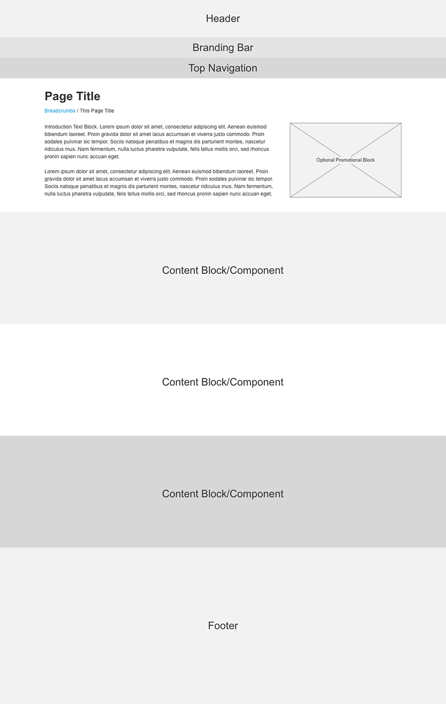
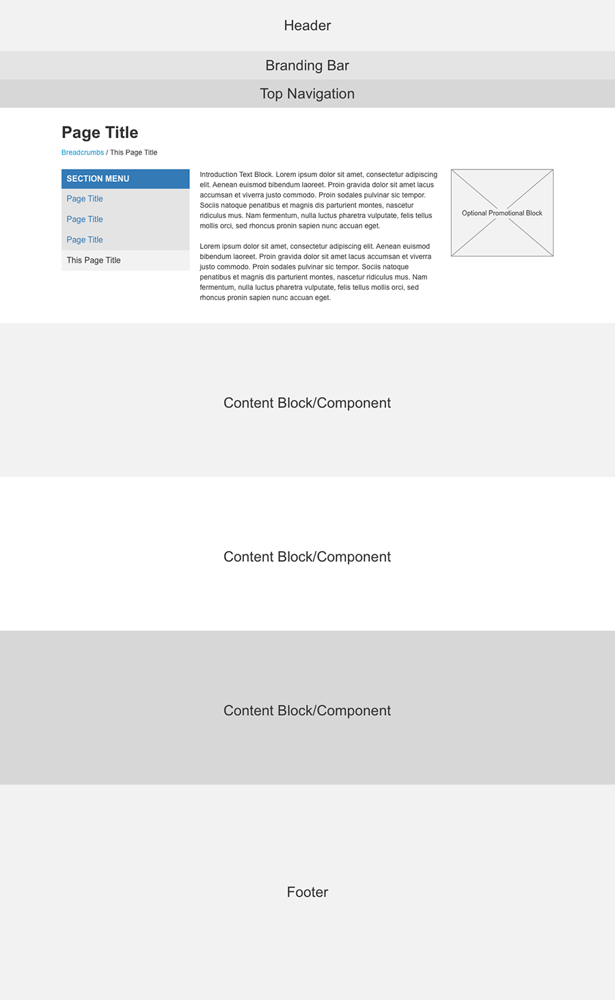
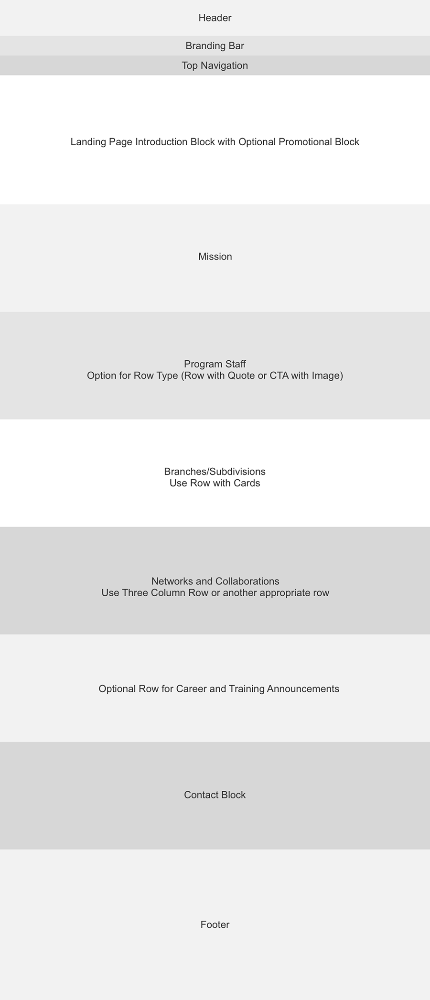

Templates
DCCPS Homepage
The DCCPS Homepage template includes a Header, Top Navigation, Hero, “In the Spotlight”, “What’s New”, “Featured Video/Infographic”, About DCCPS, Program Areas, and a Footer. See Pattern Library for specific details on each block. The parent site homepage flow differs from the program areas since it encompasses more information than the specific program areas.
Program Area Homepage
The Program Area Homepage template includes a Header, Branding Bar, Top Navigation, Hero, “Explore”, About Program Area, “In the Spotlight”, Connect with Us, and a Footer. See Pattern Library for specific details on each block. Each program area should follow the same flow for consistency and continuity across the program areas.
Landing Page Template
The Landing Page Template includes a Header, Branding Bar for program areas, Top Navigation, Page Title, Breadcrumbs, Introduction Section, options for Content Blocks/Components, and a Footer.
Subpage Template
The Subpage Template includes a Header, Branding Bar for program areas, Top Navigation, Page Title, Breadcrumbs, Introduction section, options for Content Blocks, and Footer.
About Us Template
The About page follows a consistent layout from program area to program area so that users understand where to find information.
Introduction Block
Following the subpage layout, the introduction section includes an Introduction Text block and as an option, a Promotional Block may be included to the right.
Mission Section
The mission section is dedicated to the program’s mission and vision statement. Use a Simple Row and include a promotional box to feature related items such as fact sheets.
Staff Section
The staff section calls attention to the program area staff. Recommended to use either the Row with a Quote or CTA with Image for visual interest.
Branches/Subdivisions
Use this section to group branches or subdivisions. Utilize a Row with Cards to contain each item.
Networks/Collaborations/Partnerships
The content type may vary here and it is recommended to choose the best row type for the amount of content. Be sure to include teaser text.
Optional Row
Any additional content may be featured here, for example, Career and Training Announcements.
Contact Us
This section provides users contact information at a glance.